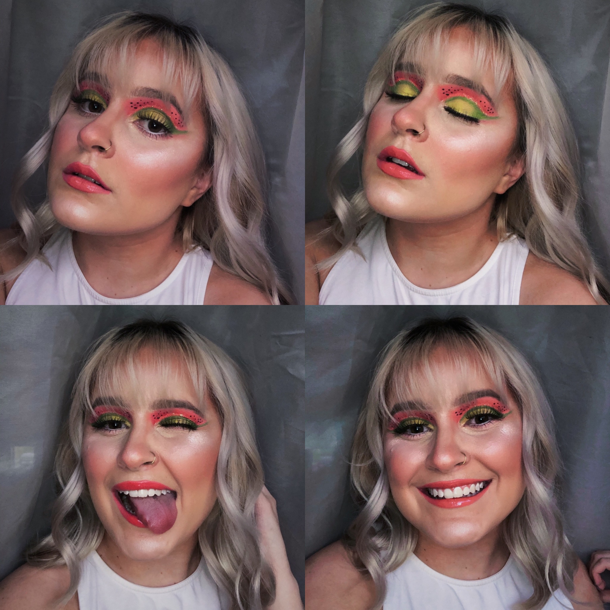
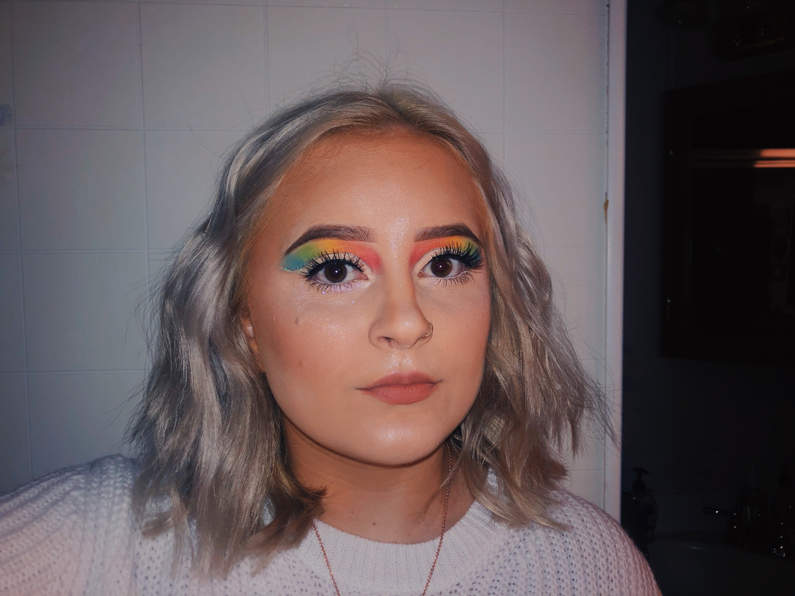
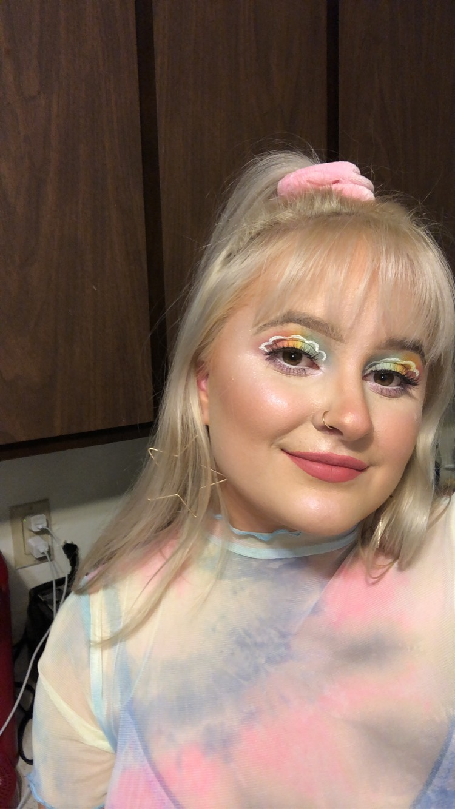

This look was inspired by the song Watermelon Sugar, performed by Harry Styles.
This look and photoshoot was inspired by the album The Divine Feminine, created by one of my favorite artists, Mac Miller.


Colorful makeup is my favorite to create.
 This look was inspired by the song Real Love Baby, performed by Father John Misty.

Not only do I love incorporating color into my looks, I love adding gem stones as well!